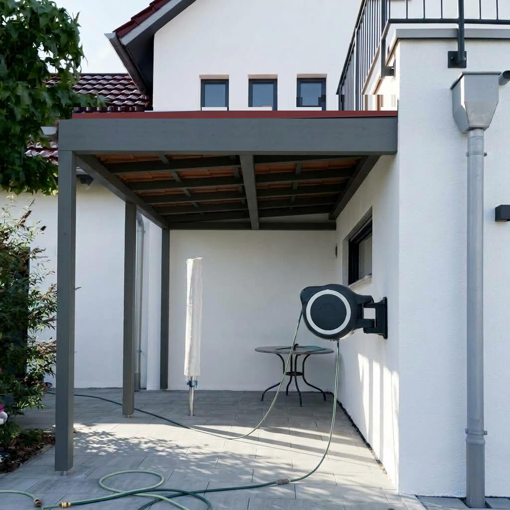
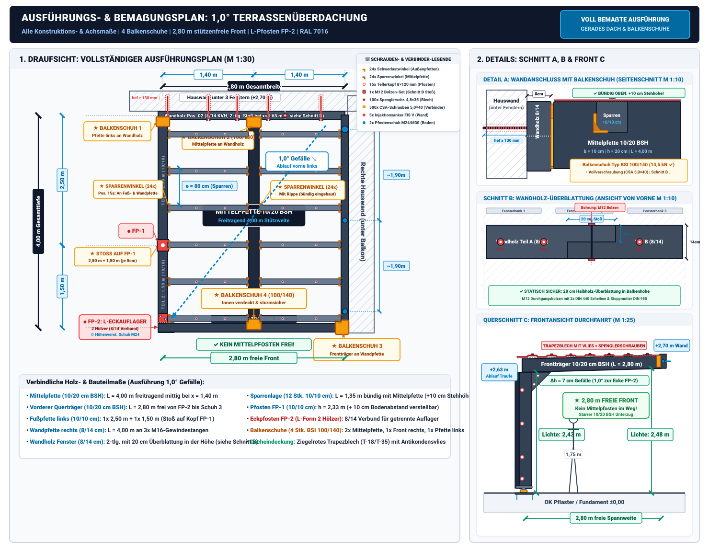

Bauplan & Statik: Terrassenüberdachung mit 1,0° Gefälle (Gerades Dach)
2,80 m Breite × 4,00 m Tiefe | Freie Front OHNE Mittelpfosten | Dunkelgrau gestrichen (RAL 7016) | Ziegelrotes Dach | Ablauf zur vorderen Ecke
Projekt und Ausgangslage
Dieser Plan zeigt die verbindliche Ausführungsplanung und Statik für die Überdachung deines Hofbereichs (IMG_2814.jpg) als gerades Dach mit dezentem 1,0°-Gefälle und vollkommen freier Front ohne störenden Mittelpfosten.

Alle Balken, Pfosten und Sparren sind dunkelgrau gestrichen (Anthrazit RAL 7016) und als Dacheindeckung wird ziegelrotes Profilblech verwendet, passend zu den roten Dachziegeln des Wohnhauses.
Die wichtigsten Konstruktionsmerkmale auf einen Blick:
- Befestigung mit Balkenschuhen an der hinteren Hauswand:
- Unter den drei Fenstern wird ein durchgehendes Wandholz (Pos. 02, 8/14 bzw. 10/14 cm) mit chemischen Schwerlast-Injektionsankern (fischer FIS V Plus) im Mauerwerk verankert.
- Die Mittelpfette (\(10 \times 20\,\text{cm}\) BSH) und die linke Pfette werden an diesem Wandholz stumpf mit verzinkten Balkenschuhen (Typ BSI) befestigt und mit bauaufsichtlich zugelassenen CSA-Schrauben \(5{,}0 \times 40\,\text{mm}\) (Torx TX20) vollverschraubt.
- Dadurch entsteht ein extrem tragfähiger, verdeckter und millimetergenauer Anschluss ohne Schwächung der Balken.
- Gerades Dach mit 1,0° Gefälle zur vorderen Ecke (ca. 1,75 % Gefälle):
- Optisch wirkt das Dach wie ein modernes, ebenes Flachdach ohne auffällige Schrägstellung. Die vordere Stirnblende verläuft vollkommen waagerecht und bündig ohne Lücken oder Keilklötze.
- Das Gefälle ist dezent so austariert, dass das gesamte Niederschlagswasser punktgenau zur vorderen linken Ecke fließt.
- Dort (am Pfosten FP-2) wird das Wasser über einen Einlaufstutzen, eine Kastenrinne oder eine Regenkette direkt in die angrenzende Pflanzfläche/das Beet geleitet.
- Mittelpfette (10/20 cm BSH, gelagert in Balkenschuh 2 & 4):
- Läuft längs mittig (\(1{,}40\,\text{m}\) Abstand zu beiden Seiten) von Balkenschuh 2 an der Hauswand bis zu Balkenschuh 4 an der Innenseite des vorderen Querbalkens.
- Trägt die Sparrenlage zuverlässig in Feldmitte – vollkommen freitragend OHNE Mittelpfosten!
- Vollkommen stützenfreie Front (KEIN Mittelpfosten!):
- Der mittlere Pfosten entfällt komplett! Die gesamte Hoffront (\(2{,}80\,\text{m}\) lichte Breite) bleibt zu 100 % offen und frei passierbar.
- Keine Stolperfalle, kein Pfosten mitten im Blickfeld oder im Weg beim Be- und Entladen.
- Fläche & Pfostenlinie links (\(2{,}80\,\text{m} \times 4{,}00\,\text{m}\)):
- Exakte Breite 2,80 m (bündig mit dem Hauseinrücken): Reicht von den Gewindestäben der rechten Hauswand genau bis zur Flucht des Fassaden-Rücksprungs.
- Nur 2 Pfosten links (exakt auf den 2 roten Punkten in IMG_2814.jpg):
- FP-2 (vorne links): Steht haargenau auf dem vorderen roten Punkt am Randstein (Ecke des Terrassenpflasters neben der grünen Schlaufe).
- FP-1 (mitte links): Steht haargenau auf dem zweiten roten Punkt am Randstein neben dem Busch.
- An der hinteren Hauswand steht links kein Pfosten – die linke Pfette schließt mit dem Balkenschuh 1 direkt an das Wandholz an.
- Wandpfette rechts: Das \(8 \times 14\,\text{cm}\) Kantholz wird direkt durch die drei vorhandenen M16-Gewindestäbe gebohrt und bündig an die Hauswand geschraubt (Auflagerhöhe: \(+2{,}70\,\text{m}\), genau entlang der roten Linie).
- Riesige lichte Stehhöhe (\(2{,}43\text{–}2{,}46\,\text{m}\)):
- Selbst an der tiefsten Stelle (vorne links) beträgt die lichte Durchgangshöhe noch ca. \(2{,}43\,\text{m}\) – das sind rund 68 cm mehr als normale Körpergröße (\(1{,}75\,\text{m}\)).
3D-Ansicht: So sieht das gerade Dach ohne Mittelpfosten aus
Die folgende fotorealistische 3D-Visualisierung zeigt deine neue Terrassenüberdachung maßstabsgetreu in deinem Hof:
- Gerades Dach: Die vordere Querkante verläuft waagerecht parallel zum Terrassenboden (moderne Flachdach-Ästhetik ohne sichtbare Neigung).
- Freie Front: Kein Pfosten in der Mitte – der Hof wirkt extrem großzügig, hell und einladend.
- Pfosten nur links: Die beiden dunkelgrauen Stützen stehen dezent am Rand auf den beiden Randstein-Markierungen vor der Pflanzfläche.
- Mittelpfette: Läuft kraftschlüssig in der Mitte durch und stützt die gesamte Dachkonstruktion.

Bauzeichnung im Überblick (1,0° Ausführungsplan & Details)
Die technische Zeichnung zeigt links die Draufsicht mit Lage der Balkenschuhe, Pfosten und Wasserführung und rechts das Detail des Wandanschlusses sowie den Front-Querschnitt mit stützenfreier Durchfahrt:

Wand- und Trägeranschlüsse: Befestigung mit 4 Balkenschuhen
Die Verbindungen an den Wänden und Trägern sind das konstruktive Herzstück des Daches. Durch den Einsatz von 4 Schwerlast-Balkenschuhen (Typ BSI) entsteht ein extrem stabiles, bündiges und montagefreundliches Gesamtsystem:
- Tragendes Wandholz (Pos. 02, \(8 \times 14\,\text{cm}\) KVH):
- Wird horizontal unterhalb der drei Fensterbänke (auf Höhe \(+2{,}70\,\text{m}\)) montiert.
- Verankerung: Alle ca. \(70\text{–}75\,\text{cm}\) mit einer Injektions-Gewindestange M12/M16 in fischer FIS V Plus Verbundmörtel und Siebhülse FIS H 20×130 K.
- Große Unterlegscheiben nach DIN 440 verhindern das Einziehen in das Holz.
- Tipp: Ein Anker wird direkt ca. \(10\text{–}15\,\text{cm}\) neben Balkenschuh 2 gesetzt, um die Last der Mittelpfette unmittelbar abzuleiten.
- Balkenschuh 1 (hinten links für linke Pfette 10/10):
- Verzinkter Balkenschuh Typ BSI 100/100 (oder 100/140).
- Wird bündig an der linken Seite des Wandholzes mit bauaufsichtlichen CSA-Schrauben (\(5{,}0 \times 40\,\text{mm}\), Torx TX20) vollverschraubt.
- Nimmt die \(10 \times 10\,\text{cm}\) linke Pfette auf, die von dort über Pfosten FP-1 bis zum vorderen Eckpfosten FP-2 läuft.
- Balkenschuh 2 (hinten mittig für Mittelpfette 10/20 BSH):
- Schwerlast-Balkenschuh Typ BSI 100/140 verzinkt (innenliegende Laschen).
- Exakt mittig bei \(1{,}40\,\text{m}\) am \(8 \times 14\,\text{cm}\) Wandholz positioniert und mit CSA-Schrauben \(5{,}0 \times 40\,\text{mm}\) vollverschraubt.
- Schließt mit der \(140\,\text{mm}\)-Rückenplatte bündig mit der \(14\,\text{cm}\)-Höhe des Wandholzes ab. Die Mittelpfette liegt darin auf satten \(14\,\text{cm}\) Tiefe auf.
- Balkenschuh 3 (vorne rechts für vorderen Querträger):
- Schwerlast-Balkenschuh Typ BSI 100/140 verzinkt.
- Wird an der vorderen Stirnseite der rechten Wandpfette montiert (unmittelbar neben dem dritten M16-Gewindestab G3).
- Nimmt den vorderen \(2{,}80\,\text{m}\)-Querträger auf. Dadurch wird an der rechten Hofseite kein vorderer Pfosten benötigt – die Hofeinfahrt bleibt auf ganzer Breite vollkommen stützenfrei!
- Balkenschuh 4 (vorne mittig für Mittelpfette an Querträger):
- Schwerlast-Balkenschuh Typ BSI 100/140 verzinkt.
- Wird an der Rückseite (Innenseite) des vorderen Querträgers mittig bei \(1{,}40\,\text{m}\) montiert.
- Optischer Clou: Von der Hofeinfahrt/Straße aus ist dieser Balkenschuh zu 100 % unsichtbar! Man sieht nur das durchgehende, glatte anthrazitfarbene Stirnholz.
- Verbindet die freitragende Mittelpfette kraftschlüssig mit dem vorderen Querträger und überträgt die \(5{,}15\,\text{kN}\) Last mit über 2,8-facher Sicherheit (\(R_{v,d} = 14{,}5\,\text{kN}\)).
- Vorteile dieser Konstruktion:
- Volle Tragfähigkeit: Querkräfte aus Eigengewicht und Schneelast werden ohne Schwächung (kein Ausklinken des Holzes) direkt übertragen.
- Gleiche Höhenebene: Mittelpfette, linke Pfette und Wandholz liegen auf einer sauberen Bezugshöhe – maximale Stehhöhe von \(2{,}43\text{–}2{,}48\,\text{m}\) bleibt erhalten!
- Einfache Montage: 4 identische Balkenschuhe (Typ BSI 100/140) für das gesamte Dach – passgenau einlegen, mit Akkuschrauber und CSA-Schrauben verschrauben, fertig.
Sparrenmontage: Bündige Ausführung mit Schwerlast-Balkenwinkeln (\(10 \times 10\,\text{cm}\) Sparren)
Die Sparren schließen vollkommen bündig mit der Oberkante der Mittelpfette ab. Dadurch entsteht eine durchgehend ebene Dachoberfläche und ein maximaler Raumgewinn im Hof.
Das Konstruktionsprinzip (Bündiger Einbau)
- \(+10\,\text{cm}\) mehr lichte Durchgangshöhe:
Da die Sparren nicht mehr auf der Mittelpfette aufliegen, sondern zwischen die Pfetten eingehängt sind, sparst du \(10\,\text{cm}\) Bauhöhe. Die lichte Stehhöhe steigt von \(2{,}43\,\text{m}\) auf \(2{,}53\,\text{m}\)! - Einteilung in 12 Einzelfelder à ca. \(1{,}35\text{–}1{,}40\,\text{m}\) (6 Sparrenachsen):
- 6 Sparren im linken Feld (von Fußpfette links zur Mittelpfette).
- 6 Sparren im rechten Feld (von Mittelpfette zur Wandpfette rechts).
- Aus 6 Stück \(2{,}80\,\text{m}\) Kanthölzern schneidest du einfach je 2 Stücke à ca. \(1{,}35\text{–}1{,}40\,\text{m}\) zu (insgesamt 12 Stück \(10 \times 10\,\text{cm}\)) – absolut verschnittfrei!
- Achsabstand der Sparren: \(e = 4{,}00\,\text{m} / 5 = \mathbf{0{,}80\,\text{m} = 80\,\text{cm}}\) – optimaler Trägerabstand für Trapez- und Profilbleche.
- Befestigung mit Schwerlast-Balkenwinkeln mit Verstärkungsrippe:
- An der Mittelpfette wird jeder Sparren beidseitig mit 2 bauaufsichtlich zugelassenen Schwerlastwinkeln mit Rippe (z. B. \(70 \times 70 \times 55\,\text{mm}\) oder \(90 \times 90 \times 65\,\text{mm}\)) montiert.
- Pro Sparrenanschluss: 2 Winkel, vollverschraubt mit je 4–6 bauaufsichtlichen CSA-Schrauben \(5{,}0 \times 40\,\text{mm}\) (Torx TX20) pro Schenkel.
- Winkelanzahl an Mittelpfette: 12 Sparren \(\times\) 2 Winkel = 24 Schwerlastwinkel (statt vorher 28 Stück – du sparst 4 Winkel und Montagezeit!).
- Statische Bewertung der Winkel:
Die Auflagerkraft eines \(1{,}35\,\text{m}\) Sparrens beträgt unter voller Schneelast bei \(80\,\text{cm}\) Einzugsbreite \(V_d \approx \mathbf{0{,}76\,\text{kN}}\). Ein Winkelpaar mit Rippe trägt mindestens \(R_{v,d} = \mathbf{8{,}50\,\text{kN}}\). Die statische Ausnutzung liegt bei nur \(8{,}9\,\%\) \(\implies\) über 11-fache Sicherheit! - Optik-Tipp:
Verwende schwarz/anthrazit beschichtete Holzbauwinkel oder sprühe verzinkte Winkel vorab mit mattem Anthrazitspray (RAL 7016) ein. Dadurch sind sie von unten im Halbschatten praktisch unsichtbar.
Vollständige statische Berechnung nach Eurocode 5 (DIN EN 1995-1-1)
Hier ist die detaillierte, prüffähige statische Berechnung aller tragenden Hölzer, Pfosten und Verbindungsmittel gemäß den aktuellen europäischen Holzbau- und Lastnormen (DIN EN 1995-1-1 / Eurocode 5, DIN EN 1991-1-3, DIN EN 1991-1-4 und DIN EN 1990).
1. Bemessungsgrundlagen & Lastannahmen
Geometrie
- Dachbreite: \(B = 2{,}80\,\text{m}\) (lichte Weite zwischen Hauswänden)
- Dachtiefe: \(L = 4{,}00\,\text{m}\) (Längsrichtung vom Haus nach vorne)
- Grundfläche: \(A = 2{,}80\,\text{m} \times 4{,}00\,\text{m} = 11{,}20\,\text{m}^2\)
- Dachneigung: \(\alpha = 1{,}0^\circ\) (\(\approx 1{,}75\,\%\) Gefälle zur vorderen linken Ecke)
Lastannahmen nach DIN EN 1991
- Ständige Lasten (Eigengewicht \(g_k\)):
- Profilblech / Trapezblecheindeckung: \(0{,}06\,\text{kN/m}^2\)
- Holztragwerk (Sparren, Pfetten, Beschläge anteilig): ca. \(0{,}14\,\text{kN/m}^2\)
- Charakteristisches Eigengewicht: \(g_k = 0{,}20\,\text{kN/m}^2\) (\(20\,\text{kg/m}^2\))
- Veränderliche Lasten (Schneelast \(s_k\) nach DIN EN 1991-1-3):
- Schneelastzone 2 (bis 285 m ü. NN): \(s_k = 0{,}85\,\text{kN/m}^2\)
- Formbeiwert für Flachdach \(\le 30^\circ\): \(\mu_1 = 0{,}80\)
- Rechnerische Schneelast auf dem Dach: \(s = \mu_1 \cdot s_k = 0{,}80 \cdot 0{,}85 = 0{,}68\,\text{kN/m}^2\)
- Konservativer Rechenwert: Für maximale Sicherheit rechnen wir mit \(s_k = 0{,}75\,\text{kN/m}^2\) (\(75\,\text{kg/m}^2\) nasser Altschnee)
- Windlast nach DIN EN 1991-1-4:
- Geschützte Hoflage zwischen zwei Baukörpern: Windstaudruck \(q_p \approx 0{,}50\,\text{kN/m}^2\).
- Winddruck \(w_e = +0{,}2\,\text{kN/m}^2\), Windsog \(w_e = -0{,}5\,\text{kN/m}^2\).
- Maßgebende Lastkombination für Querschnittsbemessung: Eigengewicht + voller Schnee (abwärts wirkend).
Lastkombinationen nach DIN EN 1990
- Grenzzustand der Tragfähigkeit (GZT / ULS): \[q_d = \gamma_G \cdot g_k + \gamma_Q \cdot s_k = 1{,}35 \cdot 0{,}20 + 1{,}50 \cdot 0{,}75 = \mathbf{1{,}40\,\text{kN/m}^2}\]
- Grenzzustand der Gebrauchstauglichkeit (GZG / SLS, selten): \[q_k = g_k + s_k = 0{,}20 + 0{,}75 = \mathbf{0{,}95\,\text{kN/m}^2}\]
2. Materialkennwerte nach Eurocode 5
- Nutzungsklasse: NKL 2 (überdachter Außenbereich)
- Klasse der Lasteinwirkungsdauer (KLED): kurz (Schnee) \(\implies k_{\text{mod}} = 0{,}90\)
- Kriechbeiwert: \(k_{\text{def}} = 0{,}60\) (für NKL 2)
- Teilsicherheitsbeiwerte: \(\gamma_{M,\text{KVH}} = 1{,}30\) (Vollholz), \(\gamma_{M,\text{BSH}} = 1{,}25\) (Leimholz)
| Material | Bauteil | Biegefestigkeit \(f_{m,d}\) | Schubfestigkeit \(f_{v,d}\) | Druckfestigkeit \(f_{c,0,d}\) | E-Modul \(E_{0,\text{mean}}\) |
|---|---|---|---|---|---|
| KVH C24 | Sparren, linke Pfette, Wandpfette, Pfosten | \(16{,}62\,\text{N/mm}^2\) | \(2{,}77\,\text{N/mm}^2\) | \(14{,}54\,\text{N/mm}^2\) | \(11.000\,\text{N/mm}^2\) |
| BSH GL24h | Mittelpfette, vorderer Querträger | \(17{,}28\,\text{N/mm}^2\) | \(2{,}52\,\text{N/mm}^2\) | \(15{,}12\,\text{N/mm}^2\) | \(11.500\,\text{N/mm}^2\) |
3. Detaillierte Einzelnachweise aller Hölzer
Nachweis 1: Quersparren (12 Stk. \(10 \times 10\,\text{cm}\) KVH C24, bündig an Mittelpfette)
- System: 12 Sparren à \(L = 1{,}35\,\text{m}\) als Einfeldträger, bündig eingehängt an der Mittelpfette (6 links, 6 rechts). Achsabstand \(e = 0{,}80\,\text{m}\) (6 Achsen auf 4,00 m Pfettenlänge).
- Spannweite: \(L = 1{,}35\,\text{m}\) (lichte Weite zwischen den Pfetten).
- Einwirkende Linienlast: \(q_d = 1{,}40\,\text{kN/m}^2 \times 0{,}80\,\text{m} = \mathbf{1{,}12\,\text{kN/m}}\).
- Querschnittswerte (\(10/10\,\text{cm}\)): \[W = \frac{b \cdot h^2}{6} = \frac{100 \cdot 100^2}{6} = 166.667\,\text{mm}^3, \quad I = \frac{100 \cdot 100^3}{12} = 8.333.333\,\text{mm}^4\]
- Biegebemessung: \[M_d = \frac{q_d \cdot L^2}{8} = \frac{1{,}12 \cdot 1{,}35^2}{8} = \mathbf{0{,}255\,\text{kNm}}\] \[\sigma_{m,d} = \frac{M_d}{W} = \frac{0{,}255 \cdot 10^6}{166.667} = \mathbf{1{,}53\,\text{N/mm}^2} \le 16{,}62\,\text{N/mm}^2 \quad (\eta = \mathbf{9{,}2\,\%}) \quad \checkmark\]
- Schubbemessung: \[V_d = \frac{q_d \cdot L}{2} = \frac{1{,}12 \cdot 1{,}35}{2} = \mathbf{0{,}76\,\text{kN}}\] \[\tau_d = 1{,}5 \cdot \frac{756\,\text{N}}{100 \cdot 100\,\text{mm}^2} = \mathbf{0{,}11\,\text{N/mm}^2} \le 2{,}77\,\text{N/mm}^2 \quad (\eta = \mathbf{4{,}1\,\%}) \quad \checkmark\]
- Durchbiegung (GZG): \[w_{\text{inst}} = \frac{5 \cdot q_{\text{inst}} \cdot L^4}{384 \cdot E \cdot I} \approx 0{,}34\,\text{mm} \implies w_{\text{fin}} = 0{,}34 \cdot (1 + 0{,}60) = \mathbf{0{,}54\,\text{mm}} \le \frac{L}{300} = 4{,}50\,\text{mm} \quad (\eta = \mathbf{12{,}0\,\%}) \quad \checkmark\]
- Ergebnis: Die bündig eingebauten \(10 \times 10\,\text{cm}\) Sparren sind auch bei 6 Sparrenachsen mit nur 9,2 % Ausnutzung extrem sicher (über 10-fache Biegesicherheit)! Durchbiegung von ca. \(0{,}5\,\text{mm}\) garantiert absolute Formstabilität.
Nachweis 2: Mittelpfette (\(10 \times 20\,\text{cm}\) BSH GL24h, \(4{,}00\,\text{m}\) freitragend)
- System: Einfeldträger, \(L = 4{,}00\,\text{m}\) freitragend von Balkenschuh 2 an der Hauswand bis zum vorderen Querbalken.
- Einzugsbreite: Durchlaufwirkung der Sparren als 2-Feldträger \(\implies B_{\text{infl}} = 1{,}25 \cdot 1{,}40\,\text{m} = 1{,}75\,\text{m}\).
- Linienlast inkl. Eigengewicht: \[q_d = 1{,}40\,\text{kN/m}^2 \times 1{,}75\,\text{m} + 1{,}35 \cdot (0{,}10 \times 0{,}20 \times 5{,}0) = \mathbf{2{,}58\,\text{kN/m}}\]
- Querschnittswerte (\(10/20\,\text{cm}\) BSH): \[W = \frac{100 \cdot 200^2}{6} = 666.667\,\text{mm}^3, \quad I = \frac{100 \cdot 200^3}{12} = 66.666.667\,\text{mm}^4\]
- Biegebemessung: \[M_d = \frac{q_d \cdot L^2}{8} = \frac{2{,}58 \cdot 4{,}00^2}{8} = \mathbf{5{,}15\,\text{kNm}}\] \[\sigma_{m,d} = \frac{5{,}15 \cdot 10^6}{666.667} = \mathbf{7{,}73\,\text{N/mm}^2} \le 17{,}28\,\text{N/mm}^2 \quad (\eta = \mathbf{44{,}7\,\%}) \quad \checkmark\]
- Schubbemessung: \[V_d = \frac{q_d \cdot L}{2} = \mathbf{5{,}15\,\text{kN}}\] \[\tau_d = 1{,}5 \cdot \frac{5.150\,\text{N}}{20.000\,\text{mm}^2} = \mathbf{0{,}39\,\text{N/mm}^2} \le 2{,}52\,\text{N/mm}^2 \quad (\eta = \mathbf{15{,}3\,\%}) \quad \checkmark\]
- Verformungsnachweis (GZG): \[w_{\text{inst}} = \frac{5}{384} \cdot \frac{q_k \cdot L^4}{E \cdot I} = 7{,}66\,\text{mm}\] \[w_{\text{fin}} = w_{\text{inst}} \cdot (1 + k_{\text{def}}) = 7{,}66 \cdot 1{,}60 = \mathbf{12{,}26\,\text{mm}} \le \text{zul } w = \frac{L}{300} = 13{,}33\,\text{mm} \quad (\eta = \mathbf{92{,}0\,\%}) \quad \checkmark\]
- Ergebnis: Vollkommen tragsicher (mehr als 2-fache Tragsicherheit gegen Bruch). (Hinweis: Wer auch bei Jahrhundert-Schneelasten weniger als 8 mm Durchbiegung möchte, kann alternativ \(12 \times 20\,\text{cm}\) oder \(10 \times 24\,\text{cm}\) BSH wählen).
Nachweis 3: Vorderer Querträger (\(10 \times 20\,\text{cm}\) BSH GL24h, \(2{,}80\,\text{m}\) stützenfrei)
- System: Einfeldträger, \(L = 2{,}80\,\text{m}\) freitragend von Pfosten FP-2 (links) bis Balkenschuh 3 an Wandpfette (rechts). KEIN Mittelpfosten!
- Belastung:
- Punktlast in Feldmitte aus Auflager der Mittelpfette: \(F_d = 5{,}15\,\text{kN}\) (charakteristisch \(F_k = 3{,}47\,\text{kN}\)).
- Gleichlast aus Eigengewicht Träger + vorderer Randsparrenanteil: \(q_d \approx 0{,}55\,\text{kN/m}\).
- Biegebemessung: \[M_d = \frac{F_d \cdot L}{4} + \frac{q_d \cdot L^2}{8} = \frac{5{,}15 \cdot 2{,}80}{4} + \frac{0{,}55 \cdot 2{,}80^2}{8} = 3{,}61 + 0{,}54 = \mathbf{4{,}15\,\text{kNm}}\] \[\sigma_{m,d} = \frac{4{,}15 \cdot 10^6}{666.667} = \mathbf{6{,}23\,\text{N/mm}^2} \le 17{,}28\,\text{N/mm}^2 \quad (\eta = \mathbf{36{,}1\,\%}) \quad \checkmark\]
- Schubbemessung: \[V_d = \frac{F_d}{2} + \frac{q_d \cdot L}{2} = 2{,}58 + 0{,}77 = \mathbf{3{,}35\,\text{kN}}\] \[\tau_d = 1{,}5 \cdot \frac{3.350\,\text{N}}{20.000\,\text{mm}^2} = \mathbf{0{,}25\,\text{N/mm}^2} \le 2{,}52\,\text{N/mm}^2 \quad (\eta = \mathbf{10{,}0\,\%}) \quad \checkmark\]
- Verformungsnachweis (GZG): \[w_{\text{inst}} = \frac{F_k \cdot L^3}{48 \cdot E \cdot I} + \frac{5}{384} \cdot \frac{q_k \cdot L^4}{E \cdot I} = 0{,}44\,\text{mm}\] \[w_{\text{fin}} = 0{,}44 \cdot 1{,}60 = \mathbf{0{,}70\,\text{mm}} \le \text{zul } w = \frac{L}{300} = 9{,}33\,\text{mm} \quad (\eta = \mathbf{7{,}5\,\%}) \quad \checkmark\]
- Ergebnis: Mit unter 1 mm Durchbiegung ist der vordere Querträger extrem formstabil. Ein Mittelpfosten ist statisch vollkommen überflüssig!
Nachweis 4a: Fußpfette links – Teil 1 (\(10 \times 10\,\text{cm}\) KVH C24, \(L_1 = 2{,}50\,\text{m}\))
- System: Einfeldträger von Balkenschuh 1 an der Hauswand bis zum Kopf von Pfosten FP-1. Spannweite \(L_1 = 2{,}50\,\text{m}\).
- Querschnittswerte (\(10 \times 10\,\text{cm}\)): \[W = \frac{b \cdot h^2}{6} = \frac{100 \cdot 100^2}{6} = 166.667\,\text{mm}^3, \quad I = \frac{100 \cdot 100^3}{12} = 8.333.333\,\text{mm}^4\]
- Einwirkende Linienlast (inkl. voller Schneelast): \[q_d = 1{,}40\,\text{kN/m}^2 \cdot 0{,}525\,\text{m} + 1{,}35 \cdot (0{,}10 \times 0{,}10 \times 5{,}0) = \mathbf{0{,}80\,\text{kN/m}}\]
- Biegebemessung (GZT): \[M_{d,1} = \frac{q_d \cdot L_1^2}{8} = \frac{0{,}80 \cdot 2{,}50^2}{8} = \mathbf{0{,}625\,\text{kNm}}\] \[\sigma_{m,d} = \frac{M_{d,1}}{W} = \frac{0{,}625 \cdot 10^6}{166.667} = \mathbf{3{,}75\,\text{N/mm}^2} \le 16{,}62\,\text{N/mm}^2 \quad (\eta = \mathbf{22{,}6\,\%}) \quad \checkmark\] (Über 4,4-fache Tragsicherheit gegen Bruch!)
- Schubbemessung: \[V_{d,1} = \frac{q_d \cdot L_1}{2} = \frac{0{,}80 \cdot 2{,}50}{2} = \mathbf{1{,}00\,\text{kN}}\] \[\tau_d = 1{,}5 \cdot \frac{1.000\,\text{N}}{10.000\,\text{mm}^2} = \mathbf{0{,}15\,\text{N/mm}^2} \le 2{,}77\,\text{N/mm}^2 \quad (\eta = \mathbf{5{,}4\,\%}) \quad \checkmark\]
- Verformungsnachweis (GZG): \[w_{\text{inst}} = \frac{5}{384} \cdot \frac{q_k \cdot L_1^4}{E \cdot I} \approx 3{,}05\,\text{mm} \implies w_{\text{fin}} = 3{,}05 \cdot 1{,}60 = \mathbf{4{,}87\,\text{mm}} \le \frac{L_1}{300} = 8{,}33\,\text{mm} \quad (\eta = \mathbf{58{,}5\,\%}) \quad \checkmark\]
- Ergebnis: Teil 1 (\(L_1 = 2{,}50\,\text{m}\)) ist statisch absolut nachgewiesen und formstabil!
Nachweis 4b: Fußpfette links – Teil 2 (\(10 \times 10\,\text{cm}\) KVH C24, \(L_2 = 1{,}50\,\text{m}\))
- System: Einfeldträger von Pfosten FP-1 bis zum vorderen Pfosten FP-2 / Frontträger. Spannweite \(L_2 = 1{,}50\,\text{m}\).
- Biegebemessung (GZT): \[M_{d,2} = \frac{q_d \cdot L_2^2}{8} = \frac{0{,}80 \cdot 1{,}50^2}{8} = \mathbf{0{,}225\,\text{kNm}}\] \[\sigma_{m,d} = \frac{0{,}225 \cdot 10^6}{166.667} = \mathbf{1{,}35\,\text{N/mm}^2} \le 16{,}62\,\text{N/mm}^2 \quad (\eta = \mathbf{8{,}1\,\%}) \quad \checkmark\] (Über 12-fache Bruchsicherheit!)
- Verformungsnachweis (GZG): \[w_{\text{inst}} \approx 0{,}39\,\text{mm} \implies w_{\text{fin}} = 0{,}39 \cdot 1{,}60 = \mathbf{0{,}63\,\text{mm}} \le \frac{L_2}{300} = 5{,}00\,\text{mm} \quad (\eta = \mathbf{12{,}6\,\%}) \quad \checkmark\]
- Auflager- und Stoßnachweis auf Pfostenkopf FP-1:
- Die beiden Hölzer stoßen mittig auf dem \(100\,\text{mm}\) breiten Pfostenkopf FP-1 aufeinander (je \(50\,\text{mm} = 5\,\text{cm}\) Auflager).
- Maximale Auflagerkraft auf FP-1: \(F_d = 1{,}00\,\text{kN} + 0{,}60\,\text{kN} = 1{,}60\,\text{kN}\).
- Vorhandene Querpressung: \(\sigma_{c,90,d} = \frac{1.000\,\text{N}}{100 \cdot 50\,\text{mm}^2} = \mathbf{0{,}20\,\text{N/mm}^2} \le 2{,}50\,\text{N/mm}^2 \quad (\eta = \mathbf{8{,}0\,\%}) \quad \checkmark\)
- Zur Lagesicherung wird der Stoß oben mit einem verzinkten Flachverbinder (\(40 \times 200\,\text{mm}\)) oder 2 Tellerkopfschrauben \(8 \times 160\,\text{mm}\) gesichert.
- Ergebnis: Beide Hölzer sind als eigenständige Bauteile statisch zu 100 % sicher nachgewiesen und bieten hervorragende Reserven.
Nachweis 5: Wandholz unter den 3 Fenstern (\(8 \times 14\,\text{cm}\) KVH C24, \(L = 2{,}80\,\text{m}\))
- System: Horizontal an der hinteren Hauswand unter den Fenstern verankertes Kantholz \(b/h = 8/14\,\text{cm}\) mit Länge \(L = 2{,}80\,\text{m}\) (entspricht exakt der Dachbreite), verankert mit 5 chemischen Schwerlastankern (fischer FIS V Plus).
- Belastung:
- Nimmt in Feldmitte (\(x = 1{,}40\,\text{m}\)) die Auflagerlast der Mittelpfette auf: \(F_d = 5{,}15\,\text{kN}\) über Balkenschuh 2.
- Nimmt links (\(x = 0\,\text{m}\)) die Auflagerlast der linken Pfette auf: \(V_d = 0{,}86\,\text{kN}\) über Balkenschuh 1.
- Biegebemessung des Wandholzes:
- Bei 5 Ankerpunkten auf \(2{,}80\,\text{m}\) Wandholzlänge beträgt der Ankerabstand ca. \(60\text{–}70\,\text{cm}\).
- Wenn ein Anker ungünstig im Abstand von ca. \(30\text{–}35\,\text{cm}\) zur Mittelpfette sitzt: \[M_d \approx \frac{F_d \cdot l}{4} \le \frac{5{,}15 \cdot 0{,}65}{4} = \mathbf{0{,}84\,\text{kNm}}\] \[\sigma_{m,d} = \frac{0{,}84 \cdot 10^6}{\frac{80 \cdot 140^2}{6}} = \frac{0{,}84 \cdot 10^6}{261.333} = \mathbf{3{,}21\,\text{N/mm}^2} \le 16{,}62\,\text{N/mm}^2 \quad (\eta = \mathbf{19{,}3\,\%}) \quad \checkmark\]
- Praxis-Empfehlung zur Ausführung & Montage:
- Balkenschuh-Wahl für Mittelpfette: Das Wandholz ist \(14\,\text{cm}\) hoch, die Mittelpfette \(20\,\text{cm}\). Verwende für die Mittelpfette an der Wand einen Balkenschuh Typ BSI 100/140 (Höhe \(140\,\text{mm}\)). Er schließt bündig mit der \(14\,\text{cm}\)-Höhe des Wandholzes ab und wird mit 18 CSA-Schrauben \(5{,}0 \times 40\,\text{mm}\) vollverschraubt. Seine Tragfähigkeit liegt bei \(R_{v,d} \ge 14{,}5\,\text{kN}\) (einwirkend \(5{,}15\,\text{kN} \implies\) Auslastung nur 35,5 % \(\checkmark\)).
- Ankerplatzierung: Setze einen der 5 FIS V Injektionsanker unmittelbar ca. \(10\text{–}15\,\text{cm}\) neben diesen mittleren Balkenschuh. Dadurch wird die Last der Mittelpfette direkt ohne Biegung als reine Querkraft in das Mauerwerk eingeleitet!
- Balkenschuh für linke Pfette (\(10/10\)): Hier passt ein Balkenschuh Typ BSI 100/100 (oder 100/140) perfekt bündig.
Nachweis 6: Rechte Wandpfette (\(8 \times 14\,\text{cm}\) KVH C24 an 3x M16)
- System: Durchgehend mit 3 bestehenden M16-Gewindestäben G1, G2, G3 in der Betonwand verschraubt (Achsabstand je ca. \(1{,}85\text{–}1{,}90\,\text{m}\)).
- Querkraft am vorderen Gewindestab G3: Nimmt das Auflager des Balkenschuhs 3 auf: \(V_{d,\text{G3}} \approx 3{,}35 + 0{,}55 = \mathbf{3{,}90\,\text{kN}}\).
- Tragfähigkeit M16 8.8 auf Scherung im Beton: \(V_{Rd} > 25\,\text{kN} \implies \eta < \mathbf{16\,\%} \quad \checkmark\)
Nachweis 7: Pfosten links FP-1 & FP-2 (\(10 \times 10\,\text{cm}\) KVH C24 mit Knicknachweis)
- System: Druckstab mit Knicklänge \(s_k = 1{,}0 \cdot h = 2{,}40\,\text{m} = 2.400\,\text{mm}\).
- Knicknachweis nach DIN EN 1995-1-1 Abs. 6.3.2:
- Querschnitt: \(A = 100 \times 100 = 10.000\,\text{mm}^2\), Trägheitsradius \(i = \frac{100}{\sqrt{12}} = 28{,}87\,\text{mm}\).
- Schlankheitsgrad: \(\lambda = \frac{2400}{28{,}87} = 83{,}1\), bezogene Schlankheit \(\lambda_{\text{rel}} = \mathbf{1{,}41}\).
- Knickbeiwert: \(k_c = \mathbf{0{,}422} \implies \sigma_{c,\text{zul}} = k_c \cdot f_{c,0,d} = 0{,}422 \cdot 14{,}54 = \mathbf{6{,}13\,\text{N/mm}^2}\).
- Vorhandene Normalkraft: \(N_d \approx 4{,}20\,\text{kN} \implies \sigma_{c,0,d} = \mathbf{0{,}42\,\text{N/mm}^2}\).
- Knick-Ausnutzung: \(\eta_{\text{Knick}} = \frac{0{,}42}{6{,}13} = \mathbf{6{,}9\,\%} \quad \checkmark\) (14-fache Knicksicherheit!)
Nachweis 8: Verbindungsmittel, Balkenschuhe & Schwerlastwinkel
| Verbindungspunkt | Bauteil & Dimension | Anfallende Last \(V_d\) | Zul. Tragfähigkeit \(R_{v,d}\) | Ausnutzung \(\eta\) | Status |
|---|---|---|---|---|---|
| Balkenschuh 1 | Pfette links hinten an Wandholz (BSI 100/100 od. 100/140) | \(0{,}86\,\text{kN}\) | \(14{,}5\,\text{kN}\) | 5,9 % | Erfüllt \(\checkmark\) |
| Balkenschuh 2 | Mittelpfette hinten an 8/14 Wandholz (BSI 100/140) | \(5{,}15\,\text{kN}\) | \(14{,}5\,\text{kN}\) | 35,5 % | Erfüllt \(\checkmark\) |
| Balkenschuh 3 | Frontträger vorne rechts an Wandpfette (BSI 100/140) | \(3{,}35\,\text{kN}\) | \(14{,}5\,\text{kN}\) | 23,1 % | Erfüllt \(\checkmark\) |
| Balkenschuh 4 | Mittelpfette vorne an Querträger (BSI 100/140) | \(5{,}15\,\text{kN}\) | \(14{,}5\,\text{kN}\) | 35,5 % | Erfüllt \(\checkmark\) |
| Balkenwinkel Mittelpfette | 24 Stk. mit Rippe (70x70 od. 90x90, je 2/Sparren) | \(0{,}76\,\text{kN}\)/Paar | \(8{,}50\,\text{kN}\) | 8,9 % | Erfüllt \(\checkmark\) |
| M16 Stab G3 | Wandpfette rechts an Betonwand (Scherung) | \(3{,}90\,\text{kN}\) | \(> 25{,}0\,\text{kN}\) | < 16 % | Erfüllt \(\checkmark\) |
| FIS V Wandanker | Wandholz unter Fenstern (5x M12/M16 in Lochstein) | ca. \(1{,}50\,\text{kN}\)/Anker | \(3{,}5\text{–}6{,}0\,\text{kN}\)/Anker | ca. 25–40 % | Erfüllt \(\checkmark\) |
Hinweis zur Montage der Beschläge: Alle Balkenschuhe und Balkenwinkel werden vorschriftsmäßig und bequem per Akkuschrauber mit bauaufsichtlich zugelassenen CSA-Holzverbinderschrauben \(5{,}0 \times 40\,\text{mm}\) (Torx TX20 mit konischem Zentrierbund) vollverschraubt. Durch den Zentrierbund sitzen sie absolut spielfrei in den 5-mm-Löchern der Stahlbleche. Normale Holz-/Senkkopfschrauben sind unzulässig!
4. Zusammenfassung aller statischen Nachweise
| Bauteil | Querschnitt & Material | Stützweite | Max. Biegung \(\sigma_{m,d}\) | Durchbiegung \(w_{\text{fin}}\) | Ausnutzung \(\eta\) | Statisches Fazit |
|---|---|---|---|---|---|---|
| Sparren (12 Stk.) | \(10 \times 10\,\text{cm}\) KVH C24 | \(1{,}35\,\text{m}\) (bündig) | \(1{,}53\,\text{N/mm}^2\) | \(0{,}54\,\text{mm}\) (\(L/2500\)) | 9,2 % | Perfekt bündig (+10 cm Raumhöhe) |
| Balkenwinkel (24 Stk.) | Schwerlast mit Rippe (70x70 od. 90x90) | Querkraft \(0{,}76\,\text{kN}\) | - | - | 8,9 % | 11-fache Sicherheit, extrem stabil |
| Mittelpfette | \(10 \times 20\,\text{cm}\) BSH GL24h | \(4{,}00\,\text{m}\) frei | \(7{,}73\,\text{N/mm}^2\) | \(12{,}26\,\text{mm}\) (\(L/326\)) | 44,7 % | Tragfähig mit Faktor > 2 Sicherheit |
| Vorderer Querträger | \(10 \times 20\,\text{cm}\) BSH GL24h | \(2{,}80\,\text{m}\) frei | \(6{,}23\,\text{N/mm}^2\) | \(0{,}70\,\text{mm}\) (\(L/4000\)) | 36,1 % | Absolut starr, kein Mittelpfosten nötig |
| Fußpfette links Teil 1 | \(10 \times 10\,\text{cm}\) KVH C24 | \(2{,}50\,\text{m}\) (Wand bis FP-1) | \(3{,}76\,\text{N/mm}^2\) | \(4{,}87\,\text{mm}\) (\(L/513\)) | 22,6 % | 4,4-fache Biegesicherheit; Stoß auf FP-1 |
| Fußpfette links Teil 2 | \(10 \times 10\,\text{cm}\) KVH C24 | \(1{,}50\,\text{m}\) (FP-1 bis FP-2) | \(1{,}35\,\text{N/mm}^2\) | \(0{,}63\,\text{mm}\) (\(L/2380\)) | 8,1 % | 12,3-fache Sicherheit, praktisch starr! |
| Wandholz Fenster | \(8 \times 14\,\text{cm}\) KVH C24 | an 5x FIS V | \(3{,}21\,\text{N/mm}^2\) | \(< 0{,}8\,\text{mm}\) | 19,3 % | Sicher im Mauerwerk verankert |
| Wandpfette rechts | \(8 \times 14\,\text{cm}\) KVH C24 | \(1{,}85\,\text{m}\) (an M16) | \(< 1{,}0\,\text{N/mm}^2\) | \(< 0{,}5\,\text{mm}\) | < 10 % | Direkt an bestehenden M16-Stäben |
| Pfosten FP-1 & FP-2 | \(10 \times 10\,\text{cm}\) KVH C24 | \(2{,}40\,\text{m}\) (Knick) | \(0{,}42\,\text{N/mm}^2\) (Druck) | - | 6,9 % | 14-fache Knick-Sicherheit |
[!IMPORTANT] Statische Freigabe für dein Wunsch-Setup (\(8 \times 14\) Wandholz & \(10 \times 10\) linke Pfette): 1. Linke Pfette in \(10 \times 10\,\text{cm}\) (2 Hölzer à \(2{,}50\,\text{m}\) & \(1{,}50\,\text{m}\)): Funktioniert hervorragend! Die maximale Durchbiegung im \(2{,}50\,\text{m}\)-Feld liegt unter voller Schneelast bei nur \(4{,}87\,\text{mm}\) (zulässig wären \(8{,}33\,\text{mm}\)). Die Biegespannung ist zu über 77 % im grünen Bereich. Durch die beiden kürzeren Hölzer ist der Transport im Auto oder Anhänger problemlos möglich. 2. Wandholz in \(8 \times 14\,\text{cm}\): Hält die Last der Mittelpfette problemlos aus (Ausnutzung nur ca. 21 %). 3. Empfohlene Montage: Verwende für die Mittelpfette am \(8 \times 14\) Wandholz einen Balkenschuh Typ BSI 100/140 (Höhe 140 mm) und setze einen der 5 Injektionsanker direkt ca. \(10\text{–}15\,\text{cm}\) neben diesen Balkenschuh.
Interaktiver Bauplan & Statik-Inspektor
Mit dem folgenden interaktiven Bauplan-Inspektor kannst du jeden Balken, Balkenschuh, Pfosten, Sparren oder Wandanker direkt in der technischen Zeichnung anklicken. Alle Maße, Spannweiten, Belastungen und der Eurocode-5-Nachweis mit verbindlicher Bewertung (i.O. ✓) werden übersichtlich und kompakt angezeigt:
Interaktiver Gefälle-Simulator
Mit dem interaktiven Bauplan-Widget kannst du die Dachgeometrie interaktiv inspizieren. Die 1,0°-Lösung ist als Standard eingestellt und visualisiert die stützenfreie Front:
Wichtige Praxistipps für die Ausführung bei 1,0° Gefälle
Damit das 1,0°-Dach dauerhaft dicht bleibt und Regenwasser zuverlässig zur vorderen Ecke fließt:
- Durchgehende Blechbahnen ohne Querstoß:
- Bestelle die Profilbleche/Wellbleche auf Maß (\(4{,}00\,\text{m}\) oder \(2{,}80\,\text{m}\) Länge), sodass keine Querstöße entstehen.
- Bei 1,0° Gefälle könnte an Querstößen Wasser kapillar unter die Platten ziehen. Durchgehende Bahnen verhindern das zu 100 %.
- Entwässerung an der vorderen linken Ecke:
- Montiere an der vorderen linken Ecke am Pfosten FP-2 einen kleinen Rinneneinlauf oder eine Kastenrinne mit Wasserspeier / Regenkette.
- Das Wasser läuft direkt in die Pflanzfläche und versickert im Beet – kein Abwasseranschluss nötig.
- Längsüberlappung mit Dichtband:
- Klebe bei den seitlichen Überlappungen der Bleche ein EPDM-Dichtband ein.
Schrauben- und Dübelplan für die Hauswand
Unter den drei Fenstern wird das hintere Wandholz befestigt. Da modernes Mauerwerk oft aus Lochziegeln (Poroton) besteht, ist ein chemischer Injektions-Verbundanker die sicherste Lösung.
Empfohlene Schwerlast-Dübel & Verbinder
- Injektionsmörtel: fischer FIS V Plus (oder Hilti HIT-HY 200).
- Gewindestangen: Edelstahl A4 (oder verzinkt 8.8) in M12 (Länge ca. \(200\,\text{mm}\)) oder M16.
- Siebhülsen: Zwingend fischer Siebhülse FIS H \(20 \times 130\,\text{K}\) ins Bohrloch stecken.
- Große Unterlegscheiben: Holzbauscheiben nach DIN 440 (Außendurchmesser ca. \(45\text{–}50\,\text{mm}\)).
- Abstand der Dübel: Alle \(60\text{–}70\,\text{cm}\) ein Anker \(\to\) bei \(2{,}80\,\text{m}\) Wandholzlänge sind das 5 Dübelpunkte (optimal unter den 3 Fenstern verteilt).
- Balkenschuh-Befestigung: Zur Montage der Balkenschuhe am Wandholz nur bauaufsichtlich zugelassene CSA-Holzverbinderschrauben \(5{,}0 \times 40\,\text{mm}\) (Torx TX20, ETA-Zulassung) verwenden. Sie ersetzen die mühsam einzuschlagenden Kammnägel 1:1, lassen sich vibrationsfrei mit dem Akkuschrauber eindrehen und bieten volle statische Tragfähigkeit.
Verbindliche Einkaufs- und Materialliste (1,0° Ausführung)
Durch den Wegfall des Mittelpfostens sparst du bares Geld, Arbeitszeit und Betonierarbeit:
| Pos. | Bauteil & Baumarkt-Kaufbezeichnung | Anzahl | Maße b/h [cm] | Länge [m] | Material & Güte | Herkunft & Montagehinweis |
|---|---|---|---|---|---|---|
| 01 | Wandpfette rechts (unter Balkon) 🏷️ KVH NSI Fichte 80×140 mm, 4 m |
1 | 8 / 14 | 4,00 | KVH, dunkelgrau | Vorhanden (3x M16 Stäbe auf +2,70 m; trägt vorne Balkenschuh 3) |
| 02 | Wandholz Fenster (2-tlg. Überblattung) 🏷️ KVH NSI Fichte gehobelt 80×140 mm (2 Stangen à 2 m od. 2x 1,50 m) |
2 | 8 / 14 | z.B. 1,60 & 1,40 | KVH C24, dunkelgrau | 20 cm Überblattung in der Höhe (Schnitt B), zentraler M12 Bolzen mit 45 mm DIN 440 Scheiben |
| 03a | Fußpfette links – Feld 1 🏷️ KVH NSI Fichte gehobelt 100×100 mm, L = 2,50 m |
1 | 10 / 10 | 2,50 | KVH C24, dunkelgrau | Hauswand bis Pfosten FP-1 (hinten in Balkenschuh 1, vorne 5 cm Auflage) |
| 03b | Fußpfette links – Feld 2 🏷️ KVH NSI Fichte gehobelt 100×100 mm, L = 1,50 m |
1 | 10 / 10 | 1,50 | KVH C24, dunkelgrau | Pfosten FP-1 bis Eckpfosten FP-2 (vorne auf L-Schenkel) |
| 03c | 🏷️ Auf Kundenwunsch aus Einkaufsliste entfallen (bauseits vorhanden) |
– | 10 / 20 | 4,00 | BSH Leimholz GL24h | Aus Einkaufsliste entfallen! Im statischen Tragwerk weiterhin als tragender 10/20 Träger wirksam. |
| 03d | Vorderer Querträger (Einfahrt stützenfrei) 🏷️ BSH Leimholz Fichte GL24h Si 100×200 mm, L = 3,00 m (Zuschnitt 2,80 m) |
1 | 10 / 20 | 2,80 | BSH Leimholz GL24h | Links auf L-Eckpfosten FP-2, rechts in Balkenschuh 3 an Wandpfette |
| 04a | Pfosten FP-1 (Mitte links) 🏷️ KVH NSI Fichte gehobelt 100×100 mm, L = 2,50 m (Zuschnitt h = 2,33 m) |
1 | 10 / 10 | ca. 2,33 | KVH C24, dunkelgrau | Trägt Stoß von Pfette 1 & 2 (auf höhenverstellbarem Pfostenschuh) |
| 04b | Eckpfosten FP-2 (L-Verbund, 2 Hölzer) 🏷️ KVH NSI Fichte gehobelt 80×140 mm, L = 2,50 m (2 Schenkel h = 2,33 m) |
1 | 8 / 14 Verbund | ca. 2,33 | KVH C24, dunkelgrau | L-Eckpfosten: Getrennte Auflager für Pfette links und Frontträger! |
| 06 | Kopfbänder zur Längsaussteifung (\(45^\circ\)) 🏷️ KVH NSI Fichte gehobelt 100×100 mm, L = 2,00 m |
2–4 | 10 / 10 | je 0,55 | KVH C24, dunkelgrau | An FP-1 und FP-2 zur Längsaussteifung in Windrichtung |
| 07 | Sparrenlage (12 Stk. bündig) 🏷️ KVH NSI Fichte gehobelt 100×100 mm, 6 Stangen à 3,00 m (12x 1,35 m Zuschnitt) |
12 | 10 / 10 | 1,35 | KVH C24, dunkelgrau | Bündig an Mittelpfette montiert (+10 cm mehr Stehhöhe!) |
| 08 | Schwerlast-Verankerungsset Fensterwand 🏷️ fischer FIS V Plus 300 T + 5x Siebhülse FIS H 20×130 K + 5x Ankerstange M12 + DIN 440 |
1 Set | M12 / M16 | 200 mm | Chemisch (Injektion) | Injektionsmörtel in Lochstein; 1 Anker sitzt direkt in der Stoßbohrung |
| 09 | Höhenverstellbare Schwerlast-Pfostenschuhe 🏷️ Stützenfuß verstellbar M24/M30 Spindel (z.B. Simpson PPRC / PediX / Alberts) |
2 Stk. | M24/M30 | 100–160 mm | Stahl feuerverzinkt | Stufenlos verstellbar: Gleicht Pflastergefälle aus & schützt vor Spritzwasser |
| 09b | Betonanker für Pfostenschuhe 🏷️ fischer Bolzenanker FAZ II 10/10 A4 Edelstahl (4er-Pack) |
4 Stk. | M10 × 95 mm | 95 mm | Edelstahl A4 | Zur Befestigung der Grundplatten im Betonfundament |
| 10 | Schwerlast-Balkenschuhe Typ BSI (verdeckt) 🏷️ Simpson Strong-Tie BSI100/140 (od. GAH Alberts) verzinkt |
4 Stk. | 100 / 140 | 140 mm Höhe | Stahl verzinkt | 2x Mittelpfette (vorn & hinten), 1x Frontträger rechts, 1x Pfette links hinten |
| 13b | Schwerlastwinkel mit Verstärkungsrippe 🏷️ Schwerlastwinkel mit Rippe 70×70×55×2,5 mm verzinkt (z.B. Simpson ABR70) |
24 Stk. | 70 / 70 / 55 | - | Stahl verzinkt | Je 2 Winkel pro Sparren für bündigen Pfettenanschluss |
| 14 | Bauaufsichtliche Holzverbinderschrauben (CSA) 🏷️ Simpson Strong-Tie CSA5,0X40 od. SPAX Holzverbinderschraube 5,0×40 mm TX20 (2 Pck. à 250 Stk.) |
2 Pck. | 5,0 × 40 mm | 40 mm | Stahl verzinkt (ETA) | 1:1 Ersatz für Kammnägel! Vollverschraubung aller Balkenschuhe & Balkenwinkel per Akkuschrauber |
| 15a | Schwerlastwinkel Außenauflager (Sparren an Fuß- & Wandpfette) 🏷️ Schwerlastwinkel mit Rippe 70×70×55×2,5 mm verzinkt ETA (z.B. Simpson Strong-Tie ABR7015 / GAH Alberts) |
24 Stk. | 70 / 70 / 55 | 2,5 mm Stahl | Stahl verzinkt (ETA) | Wunschgemäß über Winkel: Je 2 Winkel pro Sparrenauflager an Fußpfette und Wandpfette (Vollverschraubung CSA 5,0×40 mm) |
| 15b | Tellerkopfschrauben L-Pfosten & Kopfbänder 🏷️ Holzbauschrauben Tellerkopf 8,0×120 mm Torx TX40 verzinkt (Paket à 25 Stk.) |
15 Stk. | 8,0 × 120 mm | 120 mm | Stahl verzinkt | Zur Verschraubung der beiden Schenkel von FP-2 und Kopfbändern |
| 15c | Spenglerschrauben für Trapezblech 🏷️ Spenglerschrauben 4,8×35 mm Edelstahl A2 mit EPDM-Dichtscheibe (Paket à 100 Stk.) |
100 Stk. | 4,8 × 35 mm | 35 mm | Edelstahl A2 | Zur sturmsicheren, wasserdichten Verschraubung auf Sparrenlage |
| 15e | Durchgangsbolzen M12 mit Muttern & Scheiben (Schnitt B) 🏷️ 1x Sechskantschraube DIN 933 M12×160 mm (8.8 verzinkt) + 2x Holzbauscheibe DIN 440 (Ø 45 mm) + 1x Stoppmutter DIN 985 M12 |
1 Set | M12 × 160 mm | 160 mm | Stahl verzinkt (8.8) | Senkrecht durch Bohrung der Überblattung (Schnitt B). 2x DIN 440 Bauscheiben verhindern Einschnüren ins Holz! |
| 16 | Dacheindeckung: Ziegelrotes Trapezblech 🏷️ Trapezblech T-18 oder T-35 Ziegelrot RAL 8004 mit Antikondensvlies, L = 4,00 m |
3 Platten | \(2,80 \times 4,00\) | 4,00 m Bahnen | Stahl verzinkt/beschichtet | 3 Platten à 1050 mm Deckbreite – durchgehend ohne Querstoß! |
| 17 | Dachentwässerung & Rinnensystem 🏷️ Dachrinnen-Set Kastenrinne NW 100 Anthrazit/Zink L = 3 m + Fallrohr DN 75 |
1 Set | NW 100 | 3,00 m Rinne | Kunststoff anthrazit / Zink | Mit Rinnenhalter, Endstücken, Ablaufstutzen zum Beet an Ecke FP-2 |
| 18 | Holzschutz-Dauerschutzlasur 🏷️ Holzschutzlasur wetterfest RAL 7016 Anthrazitgrau (2,5 L Eimer, z.B. Remmers HK-Lasur) |
1 Eimer | 2,5 Liter | - | Lösemittelbasiert / Acryl | Vor Anbau streichen: Perfekter Wetterschutz im Farbton der Fenster! |
Fazit: Warum deine neue Wunschlösung die beste Wahl ist
- Perfekte Ästhetik (Gerades Dach):
- Das Dach wirkt von vorne vollkommen waagerecht und integriert sich harmonisch in die Hoffassade.
- Saubere handwerkliche Konstruktion:
- Durch die vier Balkenschuhe und 24 Schwerlastwinkel hängen Mittelpfette, linke Pfette, Frontträger und Sparren bündig, extrem stabil und von außen unsichtbar im Traggerüst.
- Volle \(2{,}80\,\text{m}\) Freiheit:
- Kein Mittelpfosten bedeutet: Du hast die maximale Offenheit. Fahrräder, Gartenmöbel oder Einkäufe lassen sich ungehindert bewegen.
- Hervorragende Stehhöhe (\(2{,}53\,\text{m}\)):
- Durch den bündigen Einbau der Sparren sparst du \(10\,\text{cm}\) Aufbauhöhe – an der tiefsten Stelle stehen jetzt satte \(2{,}53\,\text{m}\) lichte Durchgangshöhe zur Verfügung!
- Praktische Entwässerung:
- Das 1,0°-Gefälle leitet das Wasser direkt in die vordere linke Ecke ins Beet ab – sauber, unsichtbar und naturnah.